指標深度解析
安全飲水權利
在 2030 年以前，實現所有人都能公平享有安全且負擔得起的飲用水。
衛生設施普及
提供完善的衛生設備，特別關注女性及弱勢族群的需求，終結隨地大小便的習俗。
水資源管理
減少污染、停止傾倒廢物、大幅提升全球用水效率，確保水資源的永續循環。
精選館藏圖書 (Books)
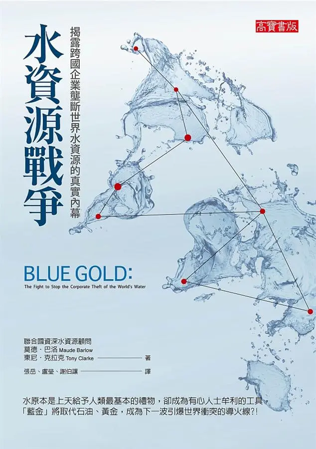
水資源戰爭
索書號：554.61 853 2011
捍衛水權高於商業利益，正視「藍金」危機，守護全球生存公義。
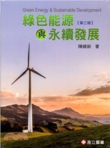
綠色能源與永續發展
索書號：400.15 8764 2018
涵蓋能源與再生能源法令，助跨領域讀者掌握國內能源法規精要。
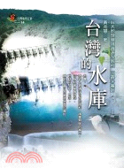
台灣的水庫
索書號：443.642 8353 2002
紀實三十座水庫結構與景觀，解析環境衝擊，記錄捍衛水權抗爭史。
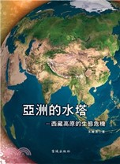
亞洲的水塔
索書號：367.7 8463 2018
解析西藏生態重要性，引導讀者正視高原環境，做出正確守護抉擇。
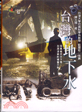
台灣的地下水
索書號：351.85 8763 2005
正視超抽與工業污染，守護岌岌可危的地下水資源與地層安全。
DVD 影音館藏 (Audio-Visual)
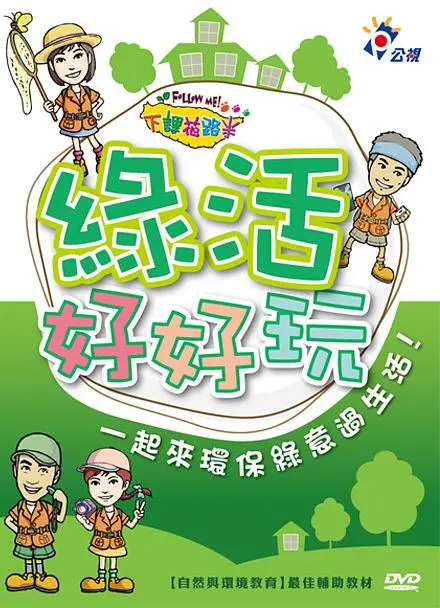
綠活好好玩
索書號：DVD 445.9 8535 2013
體驗低碳生活與生態奇觀，大小手齊心實踐綠活，守護永續大地。
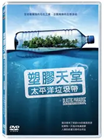
塑膠天堂
索書號：DVD 367.4 83 2016
正視海洋塑膠微粒危害，守護野生動物與全球食物鏈健康安全。
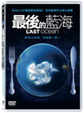
最後的藍海
索書號：DVD 367.89 864 2013
守護南極羅斯海，終止捕撈威脅，建立保護區以維繫生存實驗室。
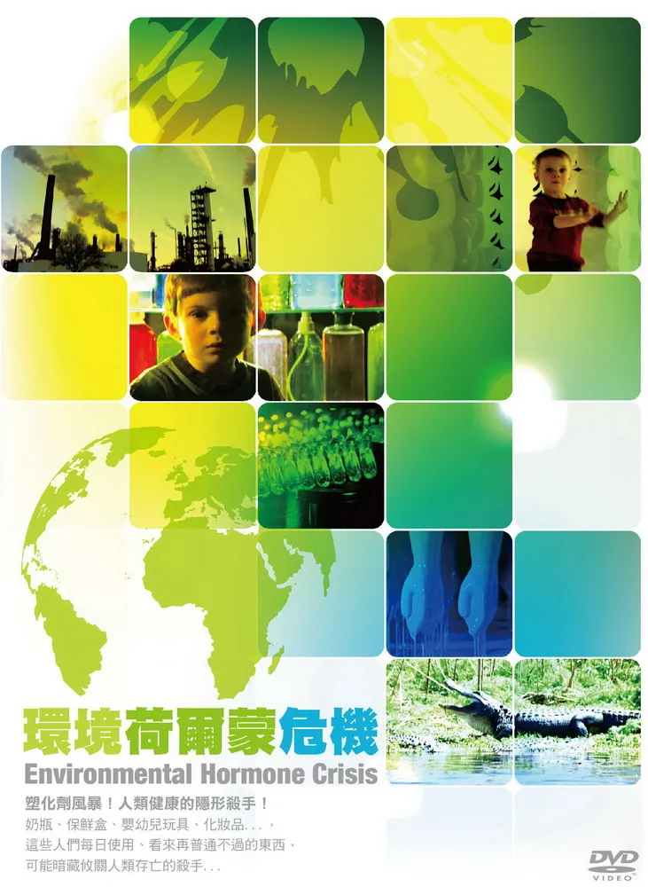
環境荷爾蒙危機
索書號：DVD 367.4 8756 2011
遠離雙酚A與可塑劑危害，正視環境荷爾蒙，守護嬰幼兒發育健康。
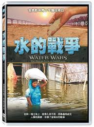
水的戰爭DVD
索書號：DVD 554.61 8435 2011
揭露全球水資源危機，探討未來水權爭奪與人類生存挑戰。
館藏電子書 (E-Books)
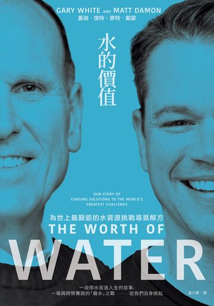
水的價值
養成節水習慣，守護珍貴水源，莫待枯竭才後悔，為未來留住生命之泉。
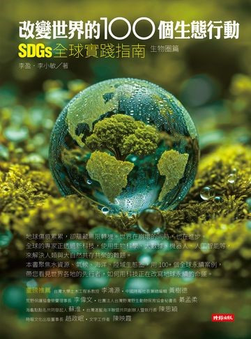
改變世界的100個生態行動
彙整百項全球永續案例，運用 AI 與新科技守護生物圈，改寫地球命運。
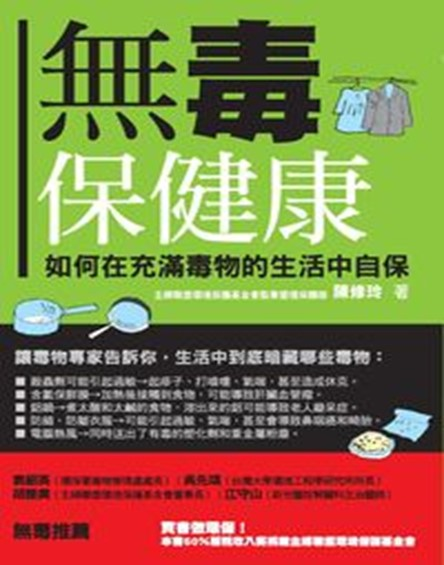
無毒保健康
結合專家毒理與本土經驗，全方位傳授食衣住避毒撇步，守護無毒生活。
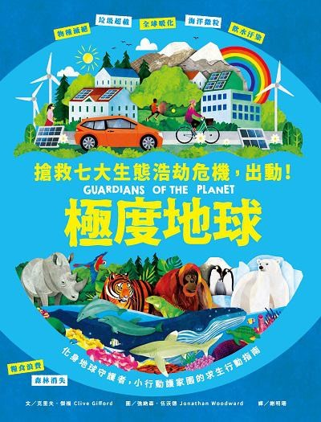
極度地球
掌握七大生態危機知識，落實減塑節能行動，成為守護地球的英雄。
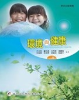
環境與健康
圖解環境健康議題，連結氣爆、核災等時事，掌握全方位永續因應之道。